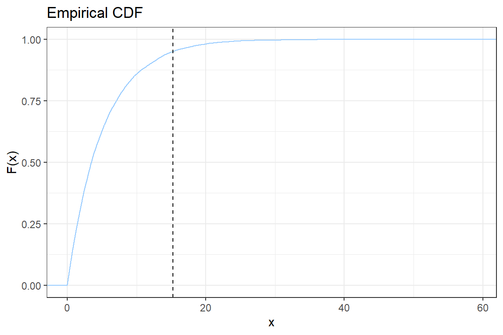
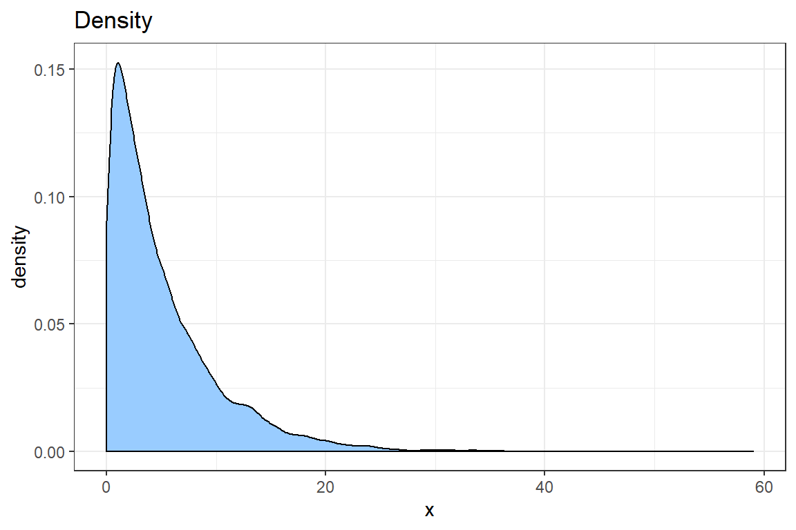
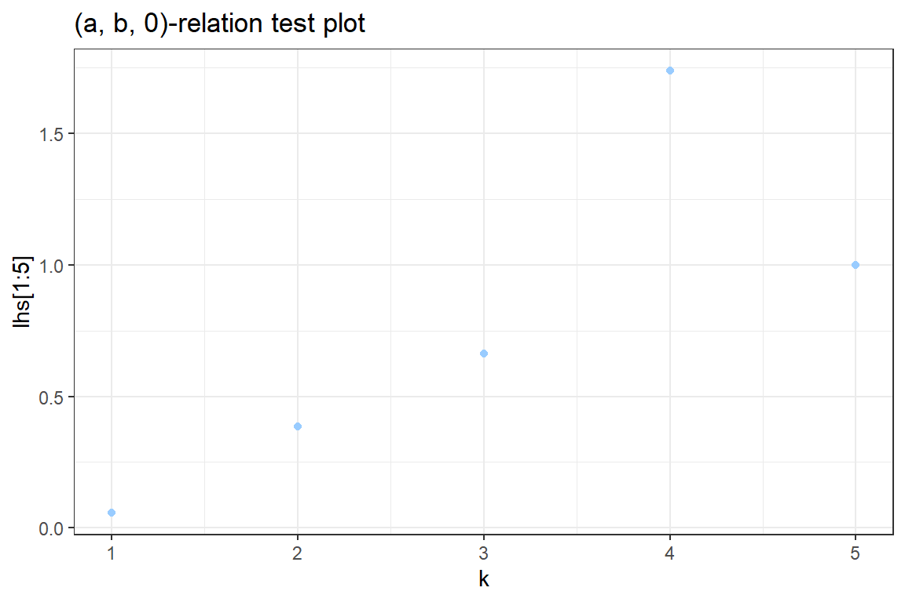
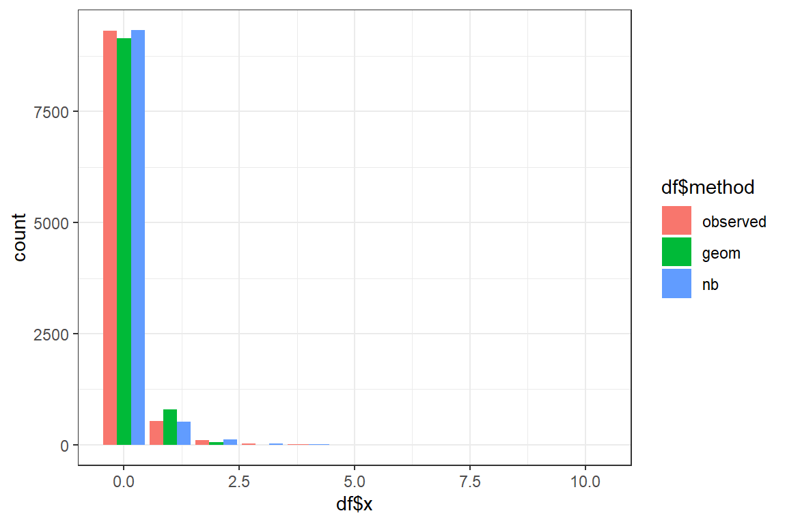

3 Simple, parametric distributions for frequency and severity data
3.1 The exponential distribution
In this tutorial you will simulate data from an exponential distribution with density\[ f(x) = \lambda \cdot e^{-\lambda \cdot x}.\]
You will then explore and visualize these data. Finally, you will fit an exponential distribution to the data using Maximum Likelihood Estimation (MLE) (as discussed in Chapter 13 of the Loss Models book).
3.1.1 Simulating data
Use the R function rexp to simulate 10 000 observations from an exponential distribution with mean \(5\).
- Create a variable
nsimfor the number of simulations; - Create a variable
lambdafor the \(\lambda\) value of the exponential distribution. Hint: the mean of the exponential distribution is given by \(\frac{1}{\lambda}\) when using the parameterization given above; - Check the documentation of
rexpto see which parameterizationRuses for the exponential distribution; - Simulate
nsimobservations from the exponential distribution. Store the result in the variablesim; - Calculate
mean(sim)and verify that the simulated mean is close to \(5\).
3.1.2 Exploratory analysis
- Calculate the (empirical) variance of the simulated sample;
- Calculate the (empirical) skewness of the simulated sample. The skewness is defined as \[ \frac{E((X-\mu)^3)}{\sigma^3}; \]
- Calculate (empirically) \(VaR_{0.95}\) and \(TVaR_{0.95}\) for the simulated sample.
3.1.3 Data visualization with ggplot
- Load the package
ggplot2; - You will construct step-by-step the following graph of the empirical CDF

Let \(x_{(i)}\) be the \(i\)-th simulated value when sorted ascending. The empirical CDF is given by
\[ \hat{F}(x_{(i)}) = \frac{\# \{\text{observations } \leq x_{(i)}\}}{n} = \frac{i}{n}.\]
2.1. Create a new ggplot. Add stat_ecdf using the simulated data;
2.2. Change the color of the line to blue by adding the option col = #99CCFF to stat_ecdf;
2.3. Add the black and white ggplot theme, theme_bw();
2.4. Add \(x\) and \(y\) labels to the graph. Hint: use xlab, ylab;
2.5. Add a vertical line to indicate the \(VaR_{0.95}\). Check the documentation for geom_vline;
2.6. Add a title to the plot using ggtitle;
2.7. Change the number of simulations nsim to 50 and observe the effect on the empirical CDF.
- Use
geom_densityto create a density plot of the data. Improve the look of the graph using what you learned when creating the plot of the empirical CDF.

# @1
library(ggplot2)
# @2.1
p <- ggplot() +
stat_ecdf(aes(sim))
# @2.2
p <- ggplot() +
stat_ecdf(aes(sim), col = "#99CCFF")
# @2.3
p <- p + theme_bw()
# @2.4
p <- p +
xlab('x') +
ylab('F(x)')
# @2.5
p <- p +
geom_vline(xintercept = var95, linetype = 'dashed')
# @2.6
p <- p +
ggtitle('Empirical CDF')
print(p)
# @3
ggplot() +
geom_density(aes(sim), fill = "#99CCFF") +
theme_bw() +
ggtitle('Density') +
xlab('x')
3.1.4 Maximum Likelihood Estimation (MLE)
The density of the exponential distribution is given by
\[f(x) = \lambda \cdot e^{-\lambda \cdot x}.\]
You have nsim simulated observations \(x_{i}, \ldots, x_{nsim}\) from this distribution. In this exercise you look for the MLE of the parameter \(\lambda\) using the simulated data.
- Write down (on paper) the formula for the likelihood of the observed data as a function of \(\lambda\);
The likelihood for the observed data is \[L(\lambda) = \prod_{i=1}^{\text{nsim}} \lambda \cdot e^{-\lambda \cdot x_i}.\]
- Derive (on paper) the log-likelihood;
The log-likelihood for the observed data is \[l(\lambda) = \sum_{i=1}^{\text{nsim}} \log(\lambda) -\lambda \cdot x_i.\]
- Compute (on paper) the MLE for \(\lambda\). Hint: put \(\frac{d \ell}{ d \lambda}(\hat{\lambda}) = 0\) and solve for the unknown \(\lambda\);
\[\frac{d l}{ d \lambda} = \frac{n}{\lambda} - \sum_{i=1}^{\text{nsim}} x_i\] This derivative is zero when
\[ \hat{\lambda} = \frac{\text{nsim}}{\sum_{i=1}^{\text{nsim}} x_i}.\] This is the MLE for \(\lambda\).
- Show that this solution maximizes our log-likelihood.
The second derivative is equal to \[\frac{d^2 l}{ d \lambda^2} = -\frac{n}{\lambda^2}\] and evaluated at the above obtained solution, we have that \[ -\frac{n}{\lambda^2} = -\frac{(\sum_{i = 1}^{nsim} x_i)^2}{n} < 0\]
which proves that our solution is indeed maximizing the log-likelihood.
- You will now find the MLE numerically in R by optimizing the likelihood using the
nlmprocedure;
5.1. Define an R-function loglikelihood which takes as input \(\lambda\) and returns the log-likelihood for the simulated sample;
5.2. The nlm procedure minimizes a function. You will minimize the negative log-likelihood \(-l(\lambda)\) to find the maximum likelihood estimator \(\hat{\lambda}\). Start from the result of 4.1 and create a function negLoglikelihood which returns the negative log-likelihood;
5.3. The nlm procedure searches for the optimal parameter in the domain \((-\infty, \infty)\). You will use a transformation \(\lambda = \exp(\beta)\) and optimize the likelihood for this parameter \(\beta \in (-\infty, \infty)\). Update the function negloglikelihood to take \(\beta\) as its input;
5.4. Minimize the function negLoglikelihood you defined in 4.3. using the nlm procedure. Add the option hessian = TRUE;
5.5. Interpret the output of nlm. What is the maximum likelihood estimate for \(\beta\) and what about \(\lambda\) (see the discussion in Section 13.3 on Variable and interval estimation). Do you find the same result as in 3.?
5.6. You will now construct a \(95\%\) confidence interval for the unknown parameter \(\beta\) and afterwards for \(\lambda\). Under MLE the actual parameter \(\beta\) is asymptotically distributed as (see Chapter 13 on Variance and interval estimation)
\[ \hat{\beta} \sim \mathcal{N}(\beta, \mathcal{I}^{-1}_n(\beta)),\] where \(\mathcal{I}_n\) denotes the Fisher information matrix. You calculate this matrix as the negative of the Hessian, the matrix with the second order derivatives of the log-likelihood, evaluated in \(\hat{\beta}\). Of course, since the Exponential distribution only has one parameter, the matrix reduces to a scalar.
5.6.1. You added the option hessian = TRUE in nlm to obtain the Hessian (numerically) in the nlm procedure. Use the Hessian to calculate the standard error (se) of the MLE \(\hat{\beta}\). Because you calculated the Hessian of the negative log-likelihood, it suffices to take its inverse to obtain the (asymptotic) variance of the MLE.
5.6.2. A \(95\%\) confidence interval for the actual parameter \(\beta\) is then given by
\[ [\hat{\beta} - \Phi^{-1}(0.975) \cdot \text{se}_{\hat{\beta}}, \hat{\beta} + \Phi^{-1}(0.975) \cdot \text{se}_{\hat{\beta}}], \] where \(\Phi\) is the CDF of the standard normal distribution. Calculate the \(95\%\) confidence interval for the intensity \(\beta\) based on the simulated sample. Is the original \(\beta = \log \lambda\) (used for simulating the data) contained in this interval?
5.6.3 You will now use the delta method (see Section 13.3 in the book) to construct a confidence interval for the unknown \(\lambda\). The MLE for \(\lambda\) is obtained from the transformation \(\hat{\lambda}=\exp \hat{\beta}\). The corresponding se is calculated as \(se_{\hat{\lambda}} = (\exp \hat{\beta}) \cdot \text{se}_{\hat{\beta}}\). Using these ingredients you are now ready to construct the confidence interval for the unknown parameter \(\lambda\).
# @1
loglikelihood <- function(lambda)
{
loglikelihood <- nsim * log(lambda) - sum(lambda * sim)
return(loglikelihood)
}
# @2
negLoglikelihood <- function(lambda)
{
loglikelihood <- nsim * log(lambda) - sum(lambda * sim)
return(-loglikelihood)
}
# @3
negLoglikelihood <- function(beta)
{
lambda <- exp(beta)
loglikelihood <- nsim * log(lambda) - sum(lambda * sim)
return(-loglikelihood)
}
# @4
fit <- nlm(negLoglikelihood, p = 0, hessian = TRUE)Warning in nlm(negLoglikelihood, p = 0, hessian = TRUE): NA/Inf replaced by
maximum positive value$minimum
[1] 26122
$estimate
[1] -1.612
$gradient
[1] -8.8e-05
$hessian
[,1]
[1,] 10001
$code
[1] 1
$iterations
[1] 8[1] 0.1994[1] 0.1994# @6
sigma.beta <- sqrt(solve(fit$hessian))
sigma.lambda <- sigma.beta * lambdaMLE
c(lambda - qnorm(0.975) * sigma.lambda, lambda + qnorm(0.975) * sigma.lambda)[1] 0.1961 0.2039- In the previous exercise, you focused on the estimator and now you will explore the distribution of this estimator.
6.1 The maximum likelihood (ML) estimator is asymptotically normal and you will now explore this distribution. Previously, we computed \(\hat{\lambda}\) for one simulated data set and for this exercise you have to compute it for 10 000 simulated data sets. Set the number of observations in each data set to 1000 and \(\lambda = 0.5\). Compute \(\hat{\lambda}\) for each of the simulated data sets and make a histogram of the distribution.
n <- 1e3
Lambda <- 0.5
Sims <- sapply(1:1e4, function(i) {
x <- rexp(n, Lambda)
1 / mean(x)
})
hist(Sims, main = expression(hat(lambda) %~% AN(lambda, I[n]^-1 * (lambda))))
We know that the Fisher information in a single observation \(x_i\) is \[\mathcal{I} = -E\Big[\frac{d^2 l}{ d \lambda^2}\Big] = \frac{1}{\lambda^2}\] and hence \(\mathcal{I}_n = n\mathcal{I} = \frac{n}{\lambda^2}\). Since \(n = 1000\) and \(\lambda = 0.5\), we have \(\mathcal{I}_n = 4000\). Consequently, the variance of \(\hat{\lambda}\) is \[\text{Var}(\hat{\lambda}) = \mathcal{I}_n^{-1} = 0.00025.\]
3.2 Discrete distributions
In this computer lab you will simulate discrete data (e.g. claim counts). You will then explore and fit a statistical model to the simulated data set.
3.2.1 Simulating the data
You simulate 10 000 observations from a lognormal distribution (a continuous distribution!). You will then discretize the simulated data by rounding down.
- Simulate
10 000observations from a lognormal distribution with density
\[f(x) = \frac{1}{x \cdot \sqrt{2 \pi}} \cdot \exp \left( -(\ln(x) + 1.5 \right)^2).\]
Hint: Check the specification of the lognormal distribution in R, ?rlnorm.
- Discretize the data by rounding down using the
floorfunction.
[,1] [,2] [,3] [,4] [,5] [,6]
x 0.1158 1.338 2.44 2.521 2.676 0.8185
floor 0.0000 1.000 2.00 2.000 2.000 0.00003.2.2 Exploratory analysis
You just obtained simulated discrete data. You now want to investigate which discrete distributions could be good candidates for modelling the simulated data.
- Start by calculating the mean and variance of the simulated data. Is the data underdispersed or overdispersed?
The variance is larger than the mean of the data. The data is overdispersed.
- Which of the following three distributions will most likely describe the data in a good way?
- Binomial
- Poisson
- Negative binomial
The Negative binomial distribution is the best candidate, since this distribution is overdispersed (binomial = underdispersed and poisson = equidispersed).
- Test visually whether the data belongs to the \((a, b, 0)\) class, i.e. see whether the relation \[ k \cdot \frac{p_k}{p_{k-1}} = a \cdot k + b, \quad k = 1,2, \ldots\] holds for the simulated data.
3.1 Compute the left hand side (lhs) of this relation.
- Use
prop.table(table(???))to get the empirical probability distribution \(p_k\); - The data is heavy tailed and the lhs can become very large when \(p_{k-1}\) is small. You check the relation for \(k = 1, \dots, 5\);
- Create a vector \(k\), \(p_k\) and \(p_{k-1}\) for \(k = 1,\ldots,5\);
- Combine these results to obtain the lhs of the equation.
3.2 Use ggplot to construct a graph containg the points \((k, k \cdot \frac{p_k}{p_{k-1}})\). Your graph should look similar to

- Load the package
ggplot2; - Create a new ggplot figure. Add a
geom_pointgraphic using the data points \((k, lhs)\);
- Change the color of the points to blue by adding the option
col = #99CCFFtogeom_point; - You can further customize the graph with
theme_bw(),xlab,ylab,ggtitle, \(\ldots\).
3.3. Discuss. Is a distribution from the \((a, b, 0)\) class a good candidate for this data?
[1] 0.0897[1] 0.1555sim
0 1 2 3 4 5 6 8 10
0.9319 0.0538 0.0104 0.0023 0.0010 0.0002 0.0001 0.0002 0.0001 k <- 1:5
pk <- prob[k+1]
pkmin1 <- prob[k]
lhs <- k * pk / pkmin1
ggplot() +
geom_point(aes(k[1:5], lhs[1:5]), color = "#99CCFF") +
theme_bw() +
xlab("k") +
ggtitle('(a, b, 0)-relation test plot')Don't know how to automatically pick scale for object of type table. Defaulting to continuous.
3.2.3 Maximum Likelihood Estimation (MLE)
You will now fit two count distributions to the simulated data:
- Geometric
- Negative binomial (NB)
3.2.3.1 Geometric
For a Geometric distribution with parameter \(p \in [0, 1]\) the probability of observing \(k\) events is given by \[ P(N = k) = (1-p)^{k} \cdot p.\] In the Appendix ‘An inventory of discrete distributions’ of the Loss Models book you will find a different parameterization. That is \[ P(N=k) = \left(\frac{\theta}{1+\theta}\right)^k \cdot \frac{1}{(1+\theta)}.\] If you put \(p = \frac{1}{1+\theta}\) you can work from the second to the first parametrization. Verify this.
- Derive an expression for the log-likelihood;
The likelihood is given by \[ L(p) = \prod_{i=1}^{\text{nsim}} P(N = x_i) = \prod_{i=1}^{\text{nsim}} (1-p)^{x_i} \cdot p.\] The log-likelihood is
\[ l(p) = \sum_{i=1}^{\text{nsim}} \left( \log(1-p) \cdot x_i + \log(p) \right).\]
- Implement the negative log-likelihood as a function in R;
- The probability \(p\) can only take values in \([0, 1]\). Change the function
geom.negLoglikelihoodto take a parameter \(\beta \in (-\infty, \infty)\). Then transform the interval \((-\infty, \infty)\) to \([0, 1]\) using the logit transform
\[ \text{logit}(p) = \log\left( \frac{p}{1-p} \right) = \beta. \]
Inverting this expression, you find (verify this!)
\[ p = \frac{\exp(\beta)}{ 1 + \exp(\beta) }.\]
- Maximize the likelihood using the
nlmprocedure in R and interpret the results.
geom.negLoglikelihood <- function(beta)
{
p <- exp(beta) / (1+exp(beta))
loglikelihood <- sum(log(1-p) * sim) + nsim * log(p)
return(-loglikelihood)
}
fit <- nlm(geom.negLoglikelihood, 1)Warning in nlm(geom.negLoglikelihood, 1): NA/Inf replaced by maximum positive
value
Warning in nlm(geom.negLoglikelihood, 1): NA/Inf replaced by maximum positive
value$minimum
[1] 3099
$estimate
[1] 2.411
$gradient
[1] -0.000222
$code
[1] 1
$iterations
[1] 6[1] 0.91773.2.3.2 Negative binomial
You will now go from the one parameter geometric distribution to a two parameter discrete distribution, the Negative Binomial. Its pf is specified as follows:
\[Pr(N=k) = \frac{\Gamma(a+k)}{\Gamma(a) k!}\left(\frac{\mu}{\mu+a}\right)^{k}\left(\frac{a}{\mu+a}\right)^{a}.\]
- Follow the same steps as with the geometric distribution to fit the NB distribution to the simulated data.
- The parameters \(\mu\) and \(a\) can take values on the positive real line \([0, \infty)\). Choose an appropriate transormation to convert this interval to the whole real line, \((-\infty, \infty)\).
NB.negativeLoglikelihood <- function(beta)
{
mu <- exp(beta[1])
a <- exp(beta[2])
loglikelihood <- sum(lgamma(a + sim) - lgamma(a) - lfactorial(sim) + sim * log(mu/(mu + a)) + a * log(a / (mu + a)))
return(-loglikelihood)
}
fit <- nlm(NB.negativeLoglikelihood, c(0, 0), hessian=TRUE)Warning in nlm(NB.negativeLoglikelihood, c(0, 0), hessian = TRUE): NA/Inf
replaced by maximum positive value
Warning in nlm(NB.negativeLoglikelihood, c(0, 0), hessian = TRUE): NA/Inf
replaced by maximum positive value
Warning in nlm(NB.negativeLoglikelihood, c(0, 0), hessian = TRUE): NA/Inf
replaced by maximum positive value$minimum
[1] 2975
$estimate
[1] -2.411 -1.893
$gradient
[1] 8.958e-04 2.859e-05
$hessian
[,1] [,2]
[1,] 562.22093 0.01064
[2,] 0.01064 121.47852
$code
[1] 1
$iterations
[1] 19# Store the fitted values
nb.mu <- exp(fit$estimate[1])
nb.a <- exp(fit$estimate[2])
c(mu = nb.mu, a = nb.a) mu a
0.0897 0.1506 3.2.4 Comparing fitted models
You will now compare which model best fits the data using AIC as well as some visual inspection tools.
3.2.4.1 AIC
Suppose that you have a statistical model calibrated on some data. Let \(k\) be the number of estimated parameters in the model. Let \({\displaystyle {\hat {L}}}\) be the maximum value of the likelihood function for the model. Then the AIC of the investigated model is the following
\[ \text{AIC} = 2 k - 2 \ln ( \hat{L}). \]
Given a set of candidate models for the data, the preferred model is the one with the minimum AIC value. Thus, AIC rewards goodness of fit (as assessed by the likelihood function), but it also includes a penalty that is an increasing function of the number of estimated parameters. The penalty discourages overfitting, because increasing the number of parameters in the model almost always improves the goodness of the fit. For more information see wikipedia.
Calculate the AIC for both fitted models. Hint: \(-\ln ( \hat{L})\) is the minimum reached by the
nlmprocedure.Which of the two models does AIC prefer?
3.2.4.2 Visual inspection
Using the fitted parameters you will now simulate new datasets of nsim observations from the Geometric and Negative Binomial distribution. You compare the shapes of the fitted and the original data.

- Simulate a dataset from the Geometric distribution using the fitted parameters;
- Simulate a dataset from the Negative binomial distribution using the fitted parameters;
- You will now create a barplot using
geom_barplot. First the data has to be merged into a single data frame containing two columns:
- x: the simulated values;
- method: a string, referring to the method used to simulate the data (i.e. observed, geom or nb).
x method
0 observed
0 observed
0 geom
1 geom
0 nb3.1 Create datasets df.observed, df.geom, df.nb with the simulated data in one column and a string referring to the method used in the other column.
3.2 Combine these three datasets into a single dataset using rbind.
- Create a barplot using
geom_bar.
By default
geom_barstacks the bars for the different methods. To show the bars sideways add the optionposition = position_dodge().Discuss. Which distribution best mimicks the original data?
sim.geom <- rgeom(nsim, geom.p)
sim.nb <- rnbinom(nsim, mu = nb.mu, size = nb.a)
df.observed <- data.frame(x = sim, method = 'observed')
df.geom <- data.frame(x = sim.geom, method = 'geom')
df.nb <- data.frame(x = sim.nb, method = 'nb')
df <- rbind(df.observed, df.geom, df.nb);
ggplot() +
geom_bar(aes(df$x, fill=df$method), position = position_dodge()) +
theme_bw()